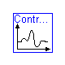
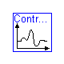

The models in this package are taken from Chapter 3 of: 'Introduction to Physical Modeling with Modelica' by Michael Tiller
| Name | Description |
|---|---|
| Capacitor | An electrical capacitor |
| ControlSystem1 | A PI Controller with Plant Model |
| ControlSystem2 | A PI Controller with Plant Model |
| ControlSystem3 | |
| ElectricalPin | |
| FrictionlessJoint | |
| Gain | |
| Ground | Ground |
| Inductor | An electrical inductor |
| Integrator | |
| PendulumSystem1 | Simple Pendulum |
| PendulumSystem2 | Simple Pendulum |
| Resistor | An electrical resistor |
| RLC2 | |
| RLC3 | Yet another RLC circuit |
| RLC4 | An RLC circuit using standard components |
| RotationalPendulum | |
| Signal | |
| SinusoidalSignal | |
| Summation | |
| TransferFunction | |
| VoltageSource | A voltage source |
BookExamples.Chapter3.Capacitor

| Name | Default | Description |
|---|---|---|
| C | 1e-6 | Capacitance [F] |
model Capacitor "An electrical capacitor" import Modelica.SIunits; parameter SIunits.Capacitance C=1e-6 "Capacitance"; ElectricalPin p; ElectricalPin n; SIunits.Voltage v; equation v = p.v - n.v; p.i = C*der(v); p.i + n.i = 0; end Capacitor;
| Name | Default | Description |
|---|---|---|
| Kp | 0.4 | |
| Ti | 1.0 | |
| w0 | 1.0 | [rad/s] |
| A | 0.2 | [rad/s] |
| F | 0.3 | [Hz] |
| J | 0.8 | [kg.m2] |
| d | 0.1 | [s-1] |
model ControlSystem1 "A PI Controller with Plant Model" extends BookExamples.Icons.RunnableExample; import Modelica.SIunits; parameter Real Kp=0.4; parameter Real Ti=1.0; parameter SIunits.AngularVelocity w0=1.0; parameter SIunits.AngularVelocity A=0.2; parameter SIunits.Frequency F=0.3; parameter SIunits.MomentOfInertia J=0.8; parameter SIunits.DampingCoefficient d=0.1; SIunits.AngularVelocity w_c; SIunits.AngularVelocity w_m; SIunits.AngularVelocity delta_w; SIunits.Torque tau; SIunits.Torque i; SIunits.Torque p; equation w_c = A*sin(2.0*Modelica.Constants.pi*F*time) + w0; delta_w = w_c - w_m; der(i) = Kp*delta_w/Ti; p = Kp*delta_w; tau = i + p; J*der(w_m) + d*w_m = tau; end ControlSystem1;
BookExamples.Chapter3.ControlSystem2

model ControlSystem2 "A PI Controller with Plant Model"
extends BookExamples.Icons.RunnableExample;
SinusoidalSignal sinsig(
A=0.2,
F=0.3,
offset=1.0);
Summation diff(scale2=-1.0);
Summation sum;
Gain KP(K=0.4);
Gain KI(K=1.0);
Integrator integrator;
TransferFunction motor(c1=0.8, c2=0.1);
equation
connect(sinsig.out_sig, diff.in_sig1);
connect(diff.out_sig, KP.in_sig);
connect(KP.out_sig, KI.in_sig);
connect(KP.out_sig, sum.in_sig1);
connect(KI.out_sig, integrator.in_sig);
connect(integrator.out_sig, sum.in_sig2);
connect(sum.out_sig, motor.in_sig);
connect(motor.out_sig, diff.in_sig2);
end ControlSystem2;
BookExamples.Chapter3.ControlSystem3
| Name | Default | Description |
|---|---|---|
| Kp | .4 | |
| Ti | 1 |
model ControlSystem3
extends BookExamples.Icons.RunnableExample;
parameter Real Kp=.4;
parameter Real Ti=1;
import Modelica.Blocks;
Blocks.Math.Feedback Difference;
Blocks.Math.Gain PGain(k={Kp});
Blocks.Math.Gain TiGain(k={1/Ti});
Blocks.Math.Add Summation;
Blocks.Continuous.Integrator IntegratorBlock;
Blocks.Sources.Sine sinsig(
amplitude={.2},
freqHz={.3},
offset={1});
Blocks.Continuous.TransferFunction PlantModel(a={.8,.1}, b={1});
equation
connect(sinsig.outPort, Difference.inPort1);
connect(Difference.outPort, PGain.inPort);
connect(PGain.outPort, Summation.inPort1);
connect(PGain.outPort, TiGain.inPort);
connect(TiGain.outPort, IntegratorBlock.inPort);
connect(IntegratorBlock.outPort, Summation.inPort2);
connect(Summation.outPort, PlantModel.inPort);
connect(PlantModel.outPort, Difference.inPort2);
end ControlSystem3;
connector ElectricalPin Modelica.SIunits.Voltage v; flow Modelica.SIunits.Current i; end ElectricalPin;
BookExamples.Chapter3.FrictionlessJoint
model FrictionlessJoint Modelica.Mechanics.Rotational.Interfaces.Flange_a a; Modelica.Mechanics.Rotational.Interfaces.Flange_b b; equation a.tau = 0; b.tau = 0; end FrictionlessJoint;
BookExamples.Chapter3.Gain
| Name | Default | Description |
|---|---|---|
| K | 1.0 | Gain factor |
block Gain input Signal in_sig; output Signal out_sig; parameter Real K=1.0 "Gain factor"; equation out_sig.val = K*in_sig.val; end Gain;
BookExamples.Chapter3.Ground

model Ground "Ground" ElectricalPin ground; equation ground.v = 0; end Ground;
BookExamples.Chapter3.Inductor

| Name | Default | Description |
|---|---|---|
| L | 1e-3 | Inductance [H] |
model Inductor "An electrical inductor" import Modelica.SIunits; parameter SIunits.Inductance L=1e-3 "Inductance"; ElectricalPin p; ElectricalPin n; equation L*der(p.i) = p.v - n.v; p.i + n.i = 0; end Inductor;
BookExamples.Chapter3.Integrator
| Name | Default | Description |
|---|---|---|
| init_val | 0 |
block Integrator parameter Real init_val=0; input Signal in_sig; output Signal out_sig(val(start=init_val)); equation der(out_sig.val) = in_sig.val; end Integrator;
BookExamples.Chapter3.PendulumSystem1

model PendulumSystem1 "Simple Pendulum" extends BookExamples.Icons.RunnableExample; RotationalPendulum pend; FrictionlessJoint joint; Modelica.Mechanics.Rotational.Fixed fixed; equation connect(pend.p, joint.a); connect(joint.b, fixed.flange_b); end PendulumSystem1;
BookExamples.Chapter3.PendulumSystem2

model PendulumSystem2 "Simple Pendulum" extends BookExamples.Icons.RunnableExample; RotationalPendulum p1(m=1, p(phi(start=1, fixed=true))); Modelica.Mechanics.Rotational.Spring s1(c=10); Modelica.Mechanics.Rotational.Damper d1(d=.1, phi_rel(start=-1)); RotationalPendulum p2(L=7, m=.7); Modelica.Mechanics.Rotational.Spring s2(c=2); Modelica.Mechanics.Rotational.Damper d2(d=.2); Modelica.Mechanics.Rotational.Fixed fixed; equation connect(p1.p, s1.flange_a); connect(p1.p, d1.flange_a); connect(s1.flange_b, p2.p); connect(d1.flange_b, p2.p); connect(p2.p, s2.flange_a); connect(p2.p, d2.flange_a); connect(s2.flange_b, fixed.flange_b); connect(d2.flange_b, fixed.flange_b); end PendulumSystem2;
BookExamples.Chapter3.Resistor

| Name | Default | Description |
|---|---|---|
| R | 300 | Resistance [Ohm] |
model Resistor "An electrical resistor" import Modelica.SIunits; parameter SIunits.Resistance R=300 "Resistance"; ElectricalPin p; ElectricalPin n; equation // Naming the connection points R*p.i = p.v - n.v; p.i + n.i = 0; end Resistor;
BookExamples.Chapter3.RLC2
| Name | Default | Description |
|---|---|---|
| R1 | 15 | [Ohm] |
| R2 | 5000 | [Ohm] |
| C | 100e-6 | [F] |
| L | 100e-3 | [H] |
model RLC2 extends BookExamples.Icons.RunnableExample; import Modelica.SIunits; parameter SIunits.Resistance R1=15; parameter SIunits.Resistance R2=5000; parameter SIunits.Capacitance C=100e-6; parameter SIunits.Inductance L=100e-3; SIunits.Voltage V_a; SIunits.Voltage V_b; SIunits.Voltage V_c; SIunits.Current i_V; SIunits.Current i_R1; SIunits.Current i_R2; SIunits.Current i_C; SIunits.Current i_L; equation V_a = if time >= 1 then 1.0 else 0.0; L*der(i_L) = V_a - V_b; R1*i_R1 = V_b - V_c; i_C = C*der(V_c); R2*i_R2 = V_b; i_V - i_L = 0; i_L - i_R1 - i_R2 = 0; i_R1 - i_C = 0; end RLC2;
BookExamples.Chapter3.RLC3

model RLC3 "Yet another RLC circuit" extends BookExamples.Icons.RunnableExample; Resistor R1(R=15); Resistor R2(R=5000); Capacitor C(C=100e-6); Inductor L(L=100e-3); VoltageSource vs; Ground g; equation connect(vs.n, g.ground); connect(vs.p, L.p); connect(L.n, R1.p); connect(L.n, R2.p); connect(R1.n, C.p); connect(C.n, g.ground); connect(R2.n, g.ground); end RLC3;
BookExamples.Chapter3.RLC4

model RLC4 "An RLC circuit using standard components" extends BookExamples.Icons.RunnableExample; import Modelica.Electrical.Analog; Analog.Basic.Resistor R1(R=15); Analog.Basic.Resistor R2(R=5000); Analog.Basic.Capacitor C(C=100e-6); Analog.Basic.Inductor L(L=100e-3); Analog.Sources.StepVoltage vs(startTime=1); Analog.Basic.Ground g; equation connect(vs.n, g.p); connect(vs.p, L.p); connect(L.n, R1.p); connect(L.n, R2.p); connect(R1.n, C.p); connect(C.n, g.p); connect(R2.n, g.p); end RLC4;
BookExamples.Chapter3.RotationalPendulum
| Name | Default | Description |
|---|---|---|
| L | 2.0 | [m] |
| m | 1.0 | [kg] |
model RotationalPendulum import Modelica.SIunits; Modelica.Mechanics.Rotational.Interfaces.Flange_a p; parameter SIunits.Length L=2.0; parameter SIunits.Mass m=1.0; protected SIunits.AngularVelocity omega; SIunits.AngularAcceleration alpha; parameter SIunits.MomentOfInertia J=m*L^2; constant Real g=Modelica.Constants.g_n; equation omega = der(p.phi); alpha = der(omega); m*g*L*Modelica.Math.sin(p.phi) + J*alpha = p.tau; end RotationalPendulum;
connector Signal Real val; end Signal;
BookExamples.Chapter3.SinusoidalSignal
| Name | Default | Description |
|---|---|---|
| A | 1.0 | Amplitude |
| offset | 1.0 | Offset |
| F | 1.0 | Frequency [Hz] |
block SinusoidalSignal output Signal out_sig; parameter Real A=1.0 "Amplitude"; parameter Real offset=1.0 "Offset"; parameter Modelica.SIunits.Frequency F=1.0 "Frequency"; equation out_sig.val = offset + A*sin(2.0*Modelica.Constants.pi*F*time); end SinusoidalSignal;
BookExamples.Chapter3.Summation
| Name | Default | Description |
|---|---|---|
| scale1 | 1.0 | Scale factor 1 |
| scale2 | 1.0 | Scale factor 2 |
block Summation input Signal in_sig1; input Signal in_sig2; output Signal out_sig; parameter Real scale1=1.0 "Scale factor 1"; parameter Real scale2=1.0 "Scale factor 2"; equation out_sig.val = scale1*in_sig1.val + scale2*in_sig2.val; end Summation;
BookExamples.Chapter3.TransferFunction
| Name | Default | Description |
|---|---|---|
| c1 | 0.8 | |
| c2 | 0.1 |
block TransferFunction input Signal in_sig; output Signal out_sig; parameter Real c1=0.8; parameter Real c2=0.1; equation c1*der(out_sig.val) + c2*out_sig.val = in_sig.val; end TransferFunction;
BookExamples.Chapter3.VoltageSource

| Name | Default | Description |
|---|---|---|
| v1 | 0 | [V] |
| v2 | 1 | [V] |
| jump_time | 1.0 | [s] |
model VoltageSource "A voltage source" import Modelica.SIunits; parameter SIunits.Voltage v1=0; parameter SIunits.Voltage v2=1; parameter SIunits.Time jump_time=1.0; ElectricalPin p; ElectricalPin n; equation p.v - n.v = if time >= jump_time then v2 else v1; p.i + n.i = 0; end VoltageSource;